カメラロールに眠る写真から、「あの1枚」と「この組み合わせ」を。
タグ付けは不要——「AI 索引」を一度実行すれば、AI が写真を理解します。
Postra は、「写真再発見」をポケットに入れるアプリです。
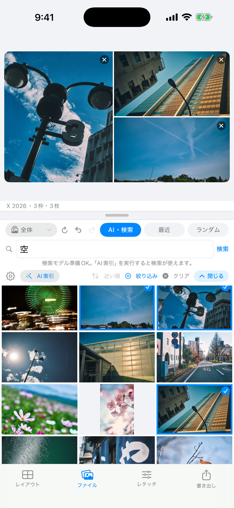
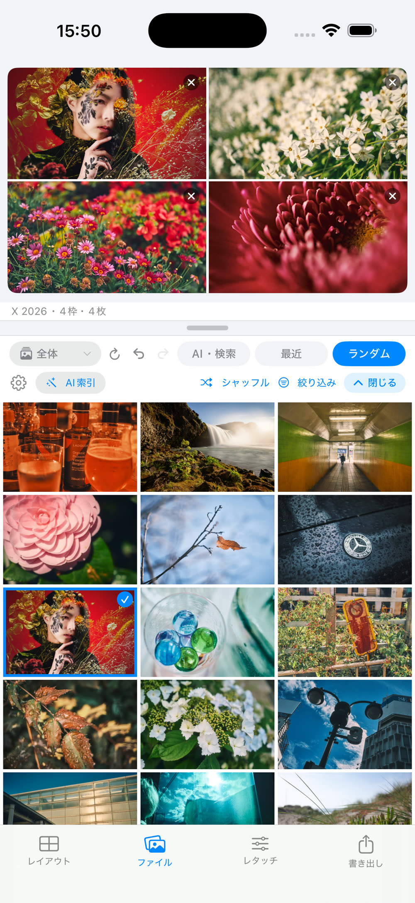
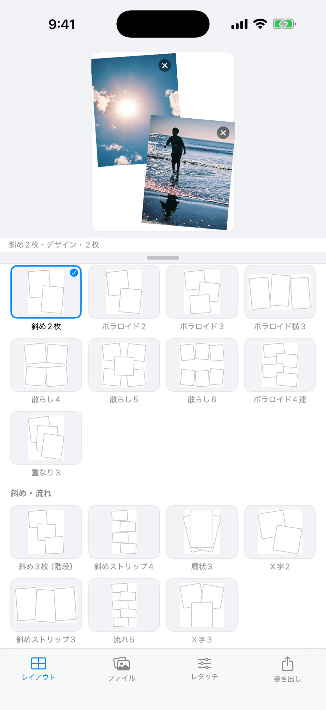
「いつか見返そう」で溜まり続けるカメラロール。フォルダやアルバムの奥にも、まだ光っていない1枚が眠っています。
Postra は、あなたの写真ライブラリから「選ぶ・組む・仕上げる・書き出す」をひとつの流れでこなす写真アプリです。
最近・ランダム・AI 検索。「花」「空」のような言葉でも、1枚を長押しして「似た写真」でも。カメラ・レンズでの絞り込みも。
グリッド・フリー・デザインテンプレート 38種。SNS 比率プリセットで枠を決めたら、シャッフルで意外な組み合わせに出会う。
プリセット一発の色補正から、明るさ・HSL・トーンカーブまで。調整のコピー & ペースト、組全体のトーン合わせも。
額装の帯に EXIF キャプション。「こう見える」プレビューで確認して、SNS 最適比率の高画質 JPEG で書き出し → 共有。
タグ付けは不要。AI 索引を済ませれば、探し方が一気に増えます。
索引はすべて端末内。アプリを閉じてもバックグラウンドで少しずつ進み、途中で止めても済んだ分は保存、残り時間の目安も表示します。
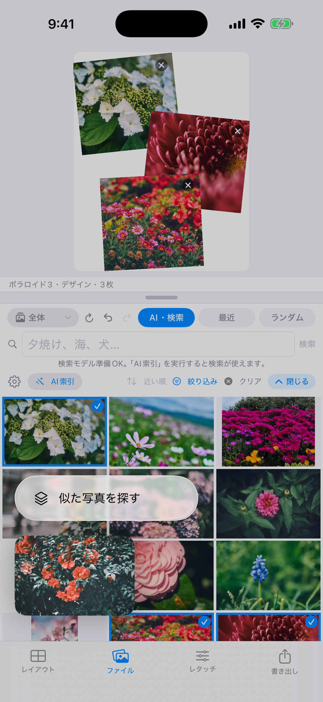
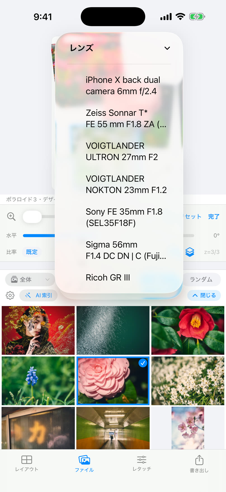
AI 索引を済ませれば、「花」「夕焼け」と日本語のまま意味で検索でき、気に入った1枚からは長押しひとつで似たカットを集められます。
レイアウトは 3 モード——固定分割のグリッド、枠数自由のフリー、ポラロイド風・フィルム風・散らしなど 38 種のデザインテンプレート（今後も追加予定）。
枠ごとの比率変更や重なり順の調整もでき、シャッフルすれば意外な組み合わせに出会えます。
そして出力の縦横比は、余白や装飾を足しても崩れないように設計しています。
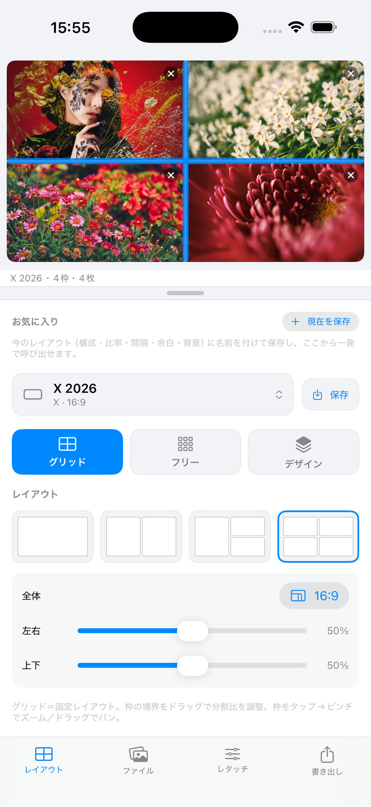
写真ライブラリは読み取り専用——元データ（オリジナル）を変更も削除もしません。
だから安心して、枠ごとに攻めた色づくりができます。プレビューは書き出しと完全に同じ計算。画面の見たままが、そのまま出力されます。
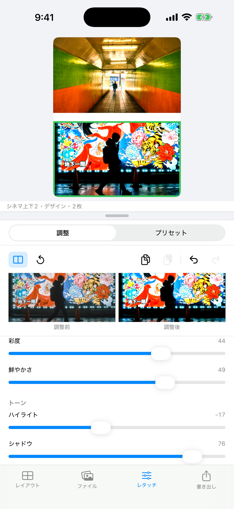
まずはプリセットを一発、適用量で好みに寄せる。追い込みたければ明るさ・コントラストから HSL 8色・トーンカーブ・粒子・周辺光量・かすみ除去まで。気に入った調整は自作プリセットとして保存できます。
仕上げの一歩先まで——額装の帯で「プリントのような1枚」に整え、「こう見える」プレビューで投稿後の見え方を確認してから書き出せます。
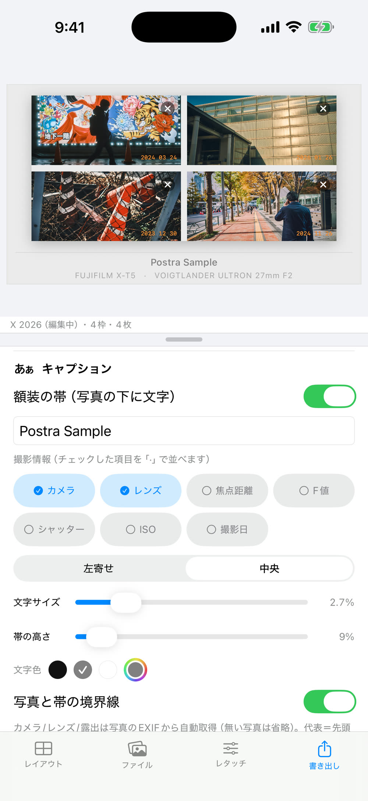
写真の下に「額装の帯」を敷いて、カメラ・レンズ・F値・撮影日などを EXIF から自動でキャプション表示。文字サイズや帯の高さ、境界線も調整できます。
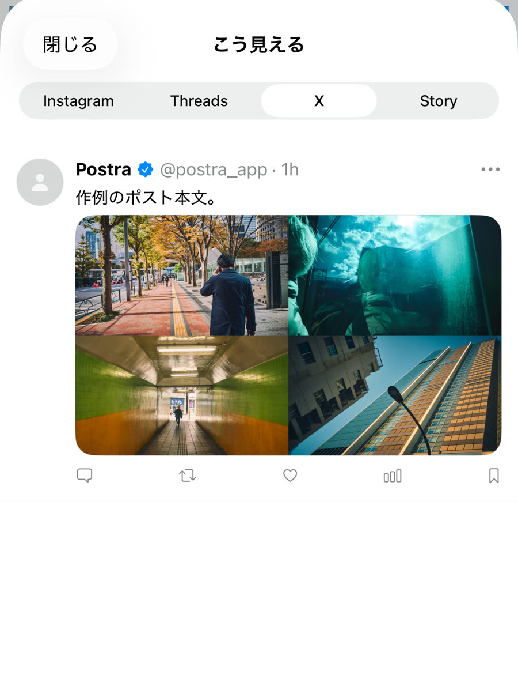
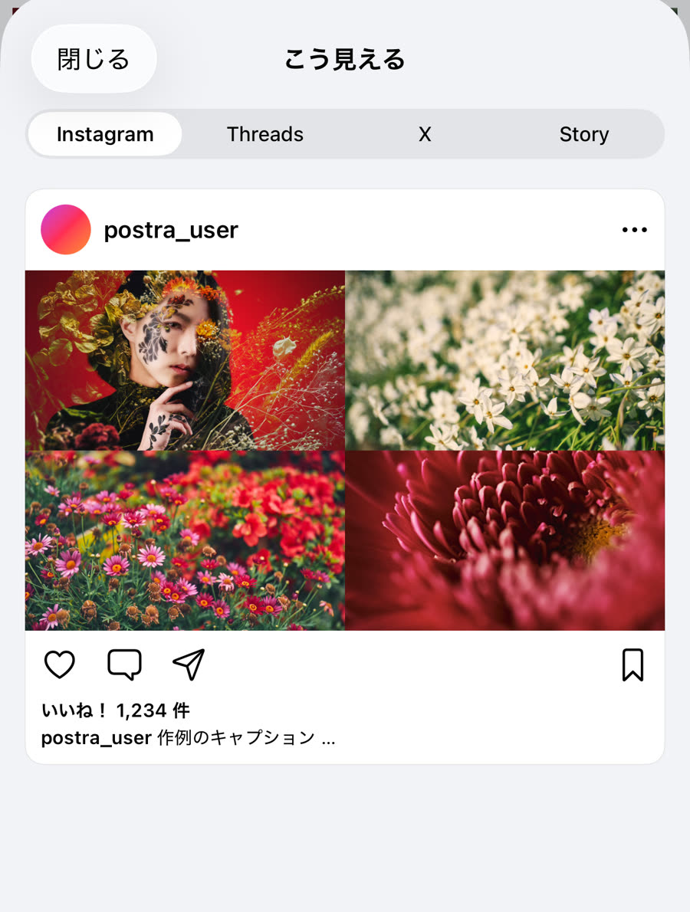
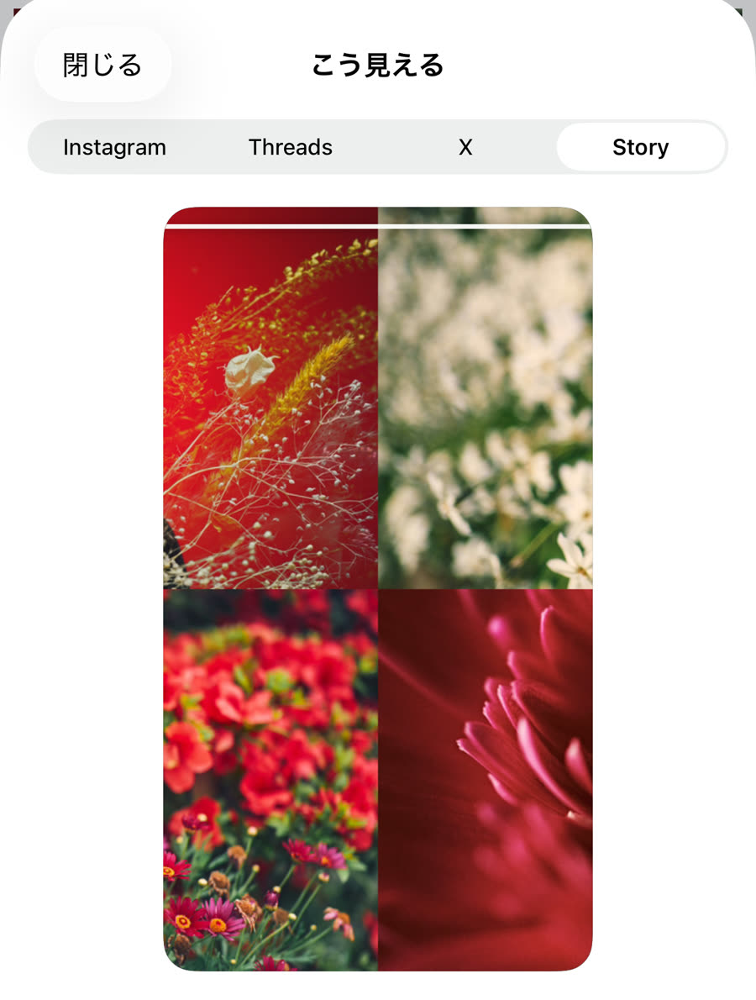
Instagram・X・Threads・ストーリーの投稿前プレビューを搭載。X なら 2〜4 枚の公式グリッド風の自動レイアウトと、1枚ずつの横スワイプ表示——投稿後の見え方をアプリの中で確かめてから書き出せます。プレビューは書き出しと同じ計算で描画されるので、確認した姿がそのまま仕上がりです。
iPad の横向きでは、盤面とパネルが横並びに。境界をドラッグして作業領域を自由に配分できます。
1 回の購入で、iPhone と iPad の両方で使えます。
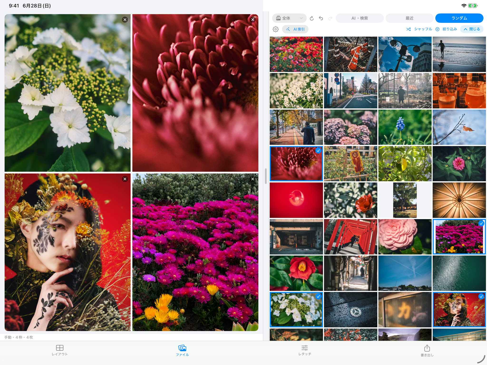
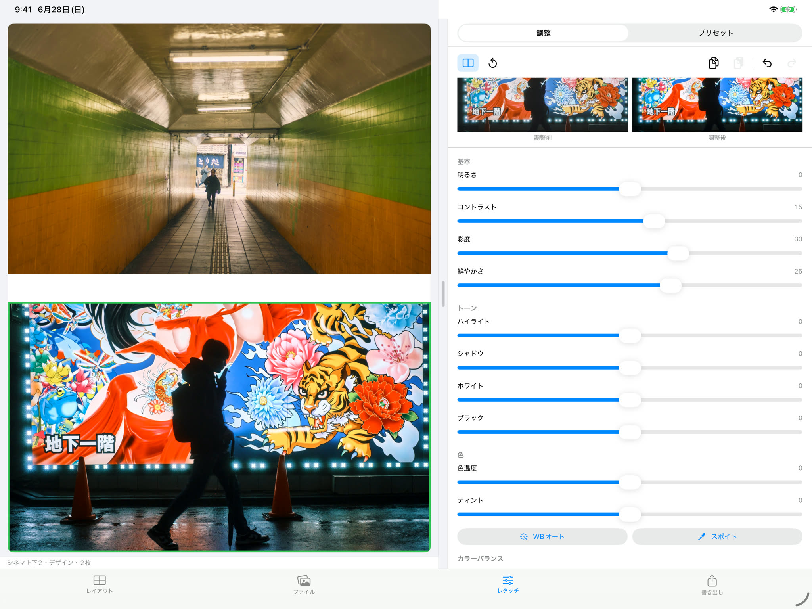
広い画面では、キャンバスを眺めながらレタッチパネルを操作。調整前 / 調整後の比較もスライダーも、盤面の隣に開いたまま。移動中に iPhone で組んだ続きを、iPad で腰を据えて仕上げる——そんな使い分けができます。
解析・レイアウト・書き出しは端末内で完結。アカウント登録もありません。
通信が発生するのは、検索モデルの初回ダウンロードや iCloud 写真の取得など、機能に必要なダウンロードのときだけです。
索引・検索・スコアリングまで、AI の計算はすべて端末の中で実行します。
写真が外部サーバーにアップロードされることはありません。
登録不要。広告も解析 SDK もありません。
App Store のプライバシー表示は「データは収集されません」です。
元データ（オリジナル）は変更も削除もしません。
バックアップ対象外なので iCloud 容量を使わず、いつでも削除・再作成できます。
iOS 17 以降の iPhone / iPad に対応。アプリ本体は約 38MB の軽量設計です。
App Store で発売中です。アプリ内課金はありません。
フォルダを直接読み込むファイルベースで、RAW の簡易現像にも対応した Mac 版（Apple Silicon 専用）もあります。数万枚のライブラリを腰を据えてセレクトするなら、デスクトップで。レイアウトと色の計算エンジンは、iOS 版と一致するよう検証済みです。
買い切りです。¥800 を一度支払えば全機能が使えます。アプリ内課金・広告はありません。
されません。写真ライブラリは読み取り専用で扱い、元データ（オリジナル）の変更も削除も一切行いません。レタッチはアプリ内の表示と書き出しにだけ反映され、何度でもやり直せます。
送られません。AI 解析・検索・レタッチ・書き出しはすべて端末の中で完結し、写真が外部に送信されることはありません。通信が発生するのは、検索モデルの初回ダウンロードや、iCloud にのみある写真の取得など、機能に必要なダウンロードのときだけです。App Store のプライバシー表示も「データは収集されません」です。
アプリ内の「AI 索引」を実行するだけです。索引は端末内で行われ、バックグラウンドでも少しずつ進みます。「言葉で検索」を使う場合のみ、初回に検索モデル（約146MB）をダウンロードします。類似検索や AI スコアは追加ダウンロード不要です。
できます。「花」「夕焼け」「夜、街」のように日本語のまま入力してください。写真でよく使われる語の辞書と端末内翻訳を組み合わせて、意味で検索します。
使えます。1 回の購入で iPhone と iPad の両方にインストールできます。iPad の横向きでは盤面とパネルが横並びになり、境界をドラッグして作業領域を配分できます。
Mac 版はフォルダを直接読み込むファイルベースで、RAW の簡易現像に対応しています。iOS 版は iOS の写真ライブラリ（iCloud 写真を含む）を読み取り専用で扱います。レイアウトや色の計算エンジンは両者で一致するよう検証済みです。なお別アプリ・別購入となります（Mac 版は ¥2,500）。
JPEG です。長辺は 1080 / 1440 / 2048 / 2400 / 3000px から選べます。出し方は「合成 1 枚」「カルーセル（連番の個別ファイル）」「個別」の 3 通り。書き出し後は共有シートから写真に保存・AirDrop・他アプリへ渡せます。
端末と枚数によります。アプリが直近の処理速度から残り時間の目安を表示するので、それを参考にしてください。アプリを閉じてもバックグラウンドで進み、途中で停止しても済んだ分は保存されます。アルバムやフォルダに対象を絞れば、短時間で使い始められます。
使えます。選択した写真の範囲でセレクトからレイアウト・書き出しまで動作します。アクセス範囲（すべて / 選択した写真）は iOS の「設定」からいつでも変更できます。
¥800 の買い切り、広告なし。iPhone と iPad の App Store で発売中です。